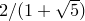

set size ( <width> | ratio <ratio> | noratio | square )
The setting size is used to set the width or aspect ratio of the next graph to be generated. If a width is specified, then it may either take the form of a dimensionless number implicitly measured in centimetres, or a quantity with physical dimensions of length such as unit(50*mm). When the keyword ratio is specified, it should be followed by the ratio of the graph’s height to its width. The keyword noratio returns the aspect ratio to its default value of the golden ratio, and the keyword square sets the aspect ratio to one.
set size noratio
Executing the command
set size noratio
resets PyXPlot to produce plots with its default aspect ratio, which is the golden ratio. Other aspect ratios can be set with the set size ratio command.
set size ratio <ratio>
This command sets the aspect ratio of plots produced by PyXPlot. The height of resulting plots will equal the plot width, as set by the set width command, multiplied by this aspect ratio. For example,
set size ratio 2.0
would cause PyXPlot to produce plots that are twice as high as they are wide. The default aspect ratio which PyXPlot uses is a golden ratio of .
set size square
This command sets PyXPlot to produce square plots, i.e. with unit aspect ratio. Other aspect ratios can be set with the set size ratio command.